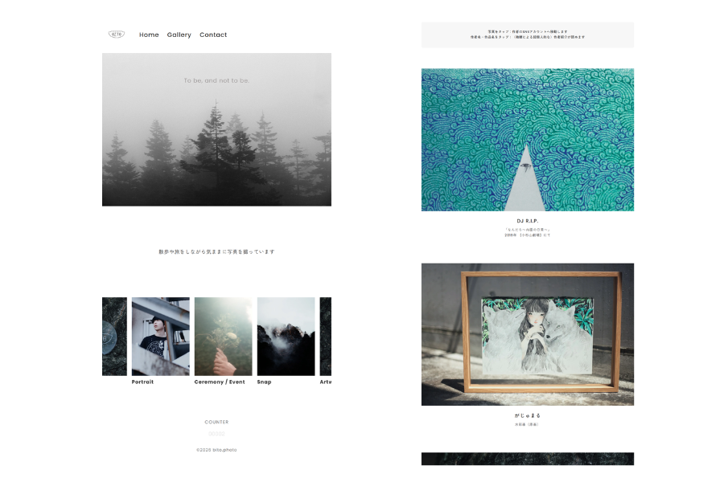

SKILL
Visual Design / STUDIO
ノーコードツール「STUDIO」を活用し、サイト全体のマージンやレスポンシブな配置を含むプロトタイプ（レイアウトデザイン）を作成しました。ビジュアルイメージを早期に可視化することで、実際のコード実装へスムーズに移行できる設計力を意識しています。
Coding / HTML & CSS
STUDIOで構築したデザインを忠実に再現するため、HTML/CSSによるコーディングを行いました。コンテンツの構造化と、余白感・レスポンシブ対応を意識した再現性の高いコーディングを実践しています。
UI・UX Design / CSS & AI
スライダー（カルーセル）機能などの動的・視覚的要素の実装にあたり、AIツールを活用して効率的な構造やCSSの組み方を検証・導入しました。未知の実装仕様に対してもAIを連携させながら調べ、思い通りのレイアウトを形にする応用力を実践しています。
PERSONA

来訪者：SNSからサイトへ移動してきた写真好きな20代女性様
「この人の世界観が好き。どんな写真を撮っているんだろう。」
「個人サイトを持っているんだ、じっくり見てみたい。」

製作者：「人との繋がり」が伝わるサイトにしたい
「単なる写真一覧ではなく、紹介している作家への想いや背景も含めて届けたい」
「余白や静けさを大切に、一枚ずつじっくり鑑賞してほしい」
POINT
ゆっくりとフェードインする画像・テキスト演出
写真と言葉を引き立てる余白を活かしたデザイン
サイト全体で統一された静かなトーン＆マナー
初めての来訪者でも直感的に回遊できるUI設計
CONCEPT
「心に触れる、記憶のアーカイブ」
単に作品を並べるのではなく、
写真の背景にある物語や、被写体との愛おしい距離感を届けること。
大切にしている人との繋がりや、自分らしい眼差しがそっと伝わり、
訪れた人が静かな温度感の中で心を寄せていけるような、
誠実で心地よい場所を目指しました。